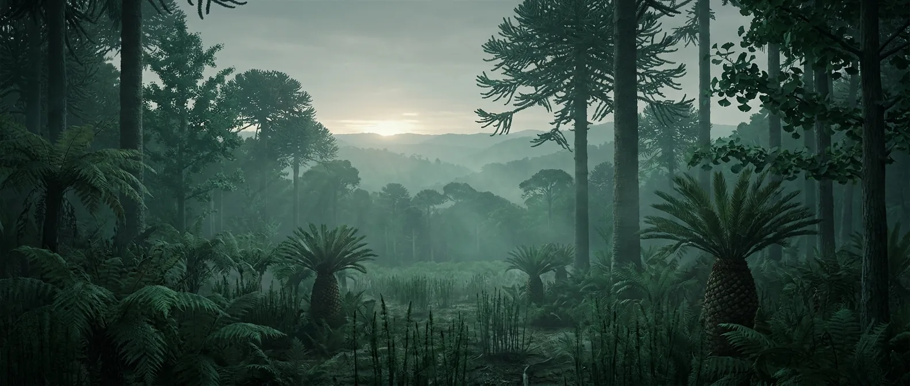
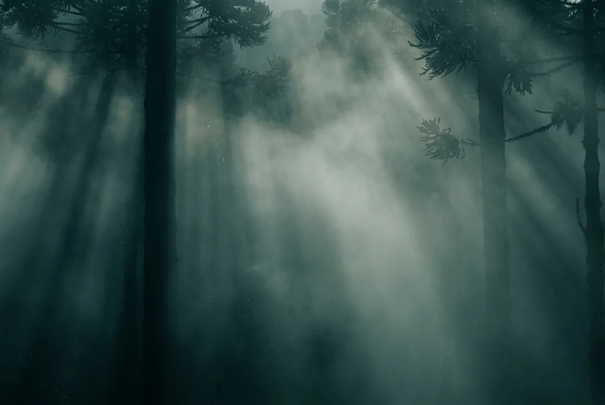
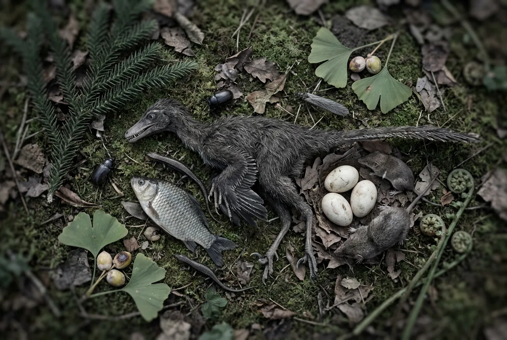

The one everybody pictures, and one of the worse places on this list to actually be. Warm, humid, ice-free and covered in vegetation, none of which you can digest. It is a garden with nothing to eat in it, patrolled by animals with no concept of what you are.
The same figure as the Silurian, 220 million years later, for the same reason: no digestible plants. The Jurassic gives you excellent shelter material, reliable water and a pleasant climate, and then hands you a menu of conifer needles and toxic seeds.

Scale 0–40%. Recovering from the Triassic minimum. Somewhere between comfortable and mildly thin, depending on which model you trust.
No flowering plants at all. That means no fruit, no grain, no grass, no leafy greens, no tubers, no nuts. The entire flora is conifers, cycads, ginkgoes, ferns and horsetails.
Scale 0–4,000 ppm. Enough to keep the poles ice-free and the mid-latitudes humid year round.
Scale −20 to 250 °C. Roughly 6 °C above modern, and mild almost everywhere. As climates on this site go, the Jurassic is genuinely pleasant.
Scale 0–24 h. About 380 days per year.
Scale 0–30 m. Herbivores, and no threat by intent. A herd of forty-tonne animals moving through the same clearing you are in is a hazard for reasons that have nothing to do with aggression.

Warm, humid, green to the horizon, fresh water running, huge trees. Every instinct you have says this is habitat. That reading is wrong, and it is wrong in a way that takes weeks to make itself felt.
Not fear, not hunger, not aggression. Nothing in the Jurassic has a category for a two-metre bipedal mammal. Large animals investigate unfamiliar objects at close range, and at eight metres and two tonnes, investigation is enough.
Conifer needles are indigestible. Cycad seeds are hepatotoxic and neurotoxic. Ferns contain thiaminase, which destroys vitamin B1, plus carcinogens. Ginkgo seeds are edible in small quantity and toxic in large. There is no safe staple anywhere in the Jurassic flora.
Fish, small mammals, lizards, insects, eggs, and the small feathered dinosaurs themselves, crow-sized theropods are as catchable as anything else here. Dinosaur eggs are the best calories on the planet and are guarded by animals that outweigh you by two orders of magnitude.
Same failure mode as the Silurian. All-protein intake, no vitamin C, no carbohydrate. The Jurassic is a beautiful place to slowly starve in.
Live on the water. Rivers and coasts are the only reliable larder.

Fine. Somewhere between modern and slightly thin.
Abundant and clean. Humid climate, permanent rivers, no drought season in most latitudes.
Animal protein only. The plants are decoration.
Excellent. Conifer wood is resinous and burns hot.
The best on this site so far. Straight conifer timber, and enough of it to build properly.
Genuine. Allosaurus, Ceratosaurus and Torvosaurus all hunt animals your size, and none of them are shy.